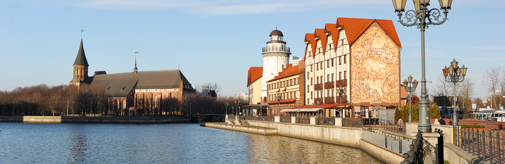

Номинации
Мой край —
моя гордость
За проекты, направленные на популяризацию муниципального образования, создание уникального образа территории
Подать заявкуКритерии номинации
Скачать файл .docИнструкция к подачи заявки
Скачать файл .doc